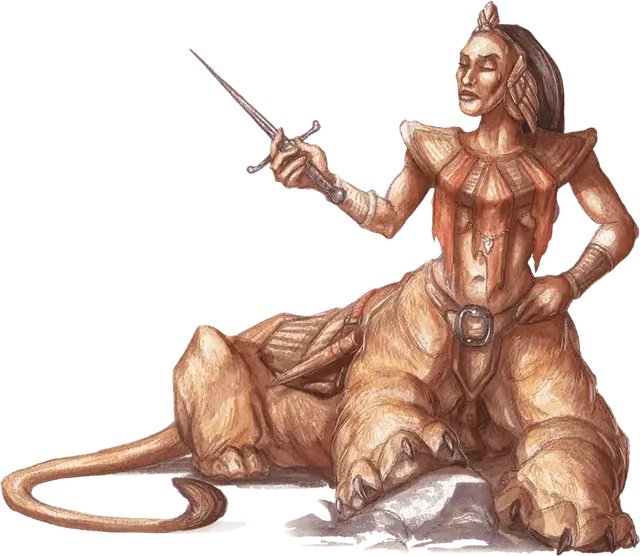

Ламия
Lamia
Большой Монстр, хаотично-злой

Класс Доспеха 13 (природный доспех)
Хиты 97 (13к10 + 26)
Скорость 30 футов
| мод | спас | ||
|---|---|---|---|
| СИЛ | 16 | +3 | +3 |
| ЛОВ | 13 | +1 | +1 |
| ТЕЛ | 15 | +2 | +2 |
| мод | спас | ||
|---|---|---|---|
| ИНТ | 14 | +2 | +2 |
| МДР | 15 | +2 | +2 |
| ХАР | 16 | +3 | +3 |
Навыки Обман +7, Проницательность +4, Скрытность +3
Чувства тёмное зрение 60 футов, пассивное Восприятие 12
Языки Общий, Бездны
Опасность 4 (1100 опыта)
Бонус мастерства +2
Среда обитания Пустыня
Особенности
Врождённое колдовство. Базовой характеристикой ламии является Харизма (Сл спасброска от заклинания 13). Она может накладывать следующие заклинания, не нуждаясь в материальных компонентах.
• Неограниченно: маскировка [disguise self] (любая гуманоидная форма), образ [major image];
• 3/день каждое: внушение [suggestion], наблюдение [scrying], отражения [mirror image], очарование личности [charm person];
• 1/день: обет [geas].
Действия
Мультиатака. Ламия совершает две атаки: одну когтями, и одну либо кинжалом, либо Дурманящим касанием.
Когти. Рукопашная атака оружием: +5 к попаданию, досягаемость 5 футов, одна цель. Попадание: Рубящий урон 14 (2к10 + 3).
Кинжал. Рукопашная атака оружием: +5 к попаданию, досягаемость 5 футов, одна цель. Попадание: Колющий урон 5 (1к4 + 3).
Дурманящее касание. Рукопашная атака заклинанием: +5 к попаданию, досягаемость 5 футов, одно существо. Попадание: Цель магическим образом становится проклятой на 1 час. Пока проклятье действует, цель совершает с помехой спасброски Мудрости и все проверки характеристик.
Описание
Руины пустынных городов и гробницы забытых монархов являются прекрасными логовами для нечестивых ламий. Эти падшие чудовища берут то, что было забыто, и создают из него двор своего гедонистического правления, окружая себя разного рода подхалимами. Ламии полагаются на шакальников, которые выполняют разного рода поручения для них. Ламии отправляют их через пустыни, чтобы привести рабов или украсть сокровища в караванах, лагерях или деревнях, укрывая их нападения своей магией.
Ламия обладает прекрасным телом гуманоида выше пояса, которое соединяется с могучим четвероногим львиным телом. Их ужасные чёрные когти говорят об их хищной натуре, как и их тяга к пыткам и вкусу плоти гуманоидов.
Гедонистические тираны. Ламии украшают свои ветхие убежища убранством, украденным у проходящих караванов, а после используют магию, чтобы ещё больше подчеркнуть богатство своего логова, скрывая тлен иллюзиями. Захватывающие дух сады, тонко украшенные апартаменты и множество рабов логова, кажется, идут вразрез с его удаленностью и ветхостью.
Используя дурманящее касание, ламия ослабляет ум своих врагов, делая их восприимчивыми к чарующим заклинаниям, и делая из них рабов. Те, кто попадут под чары её заклинания обет, будут стравлены между собой в замысловатых состязаниях, придуманных для развлечения ламии.
Тщеславные хищники. Всегда жаждущие больше богатств и рабов, ламии используют водные поверхности или зеркала, чтобы наблюдать за своими «владениями» при помощи заклинания наблюдение. Ламии следят за торговыми маршрутами и ближайшими поселениями или ищут предметы и существ, которые им понравятся.
Ламиям особенно нравится выискивать искателей приключений с чистыми сердцами, чтобы соблазнить и совратить их ко злу, смакуя крушение их добродетелей. Они используют свою магию, чтобы заманить потенциальных жертв в свое логово, и полагаются на иллюзии и рабов в поимке незадачливых противников. Впрочем, больше всего ламии ценят красоту и силу. Любой пленник, впавший в немилость, становится главным блюдом на ужасном пиру или же его отпускают, чтобы он нашел свою смерть, блуждая по пустошам.
Пока у них есть рабы, чтобы выставить их против врага, ламии будут сражаться издали, обманывая противника с помощью магии, если это возможно. Ламия, которой навязывают рукопашное сражение, не задержится в нем надолго — кромсая плоть когтями и кинжалами, она постарается убраться на безопасное расстояние.
Подручные Граз’зта. Демонический повелитель Граз’зт создает ламий из своих смертных слуг, даруя им бессмертие в обмен на клятву верности. Граз’зт иногда даёт задание ламиям охранять важные для него места, но ламии на его службе вольны сеять зло там, где им заблагорассудится.